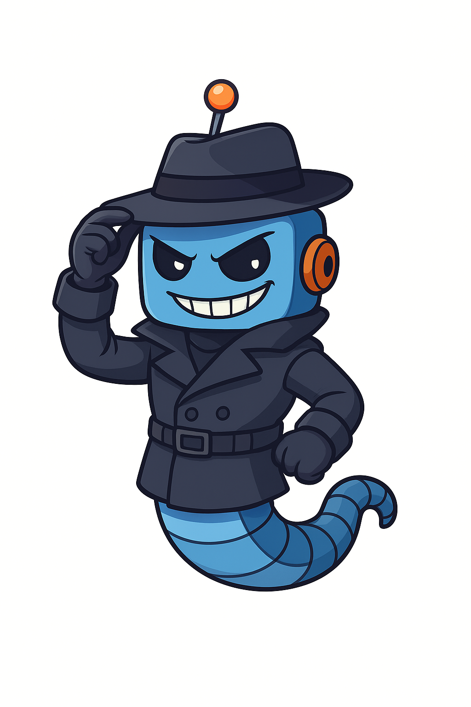
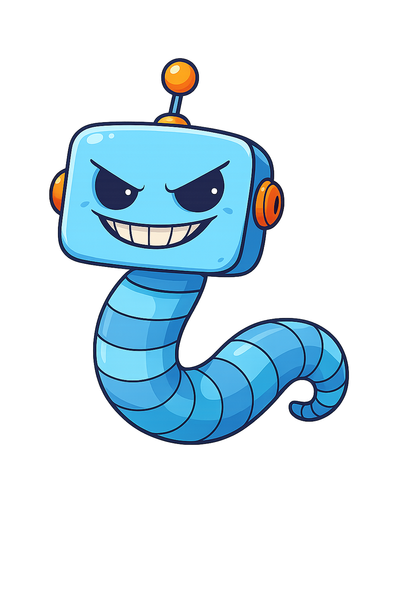
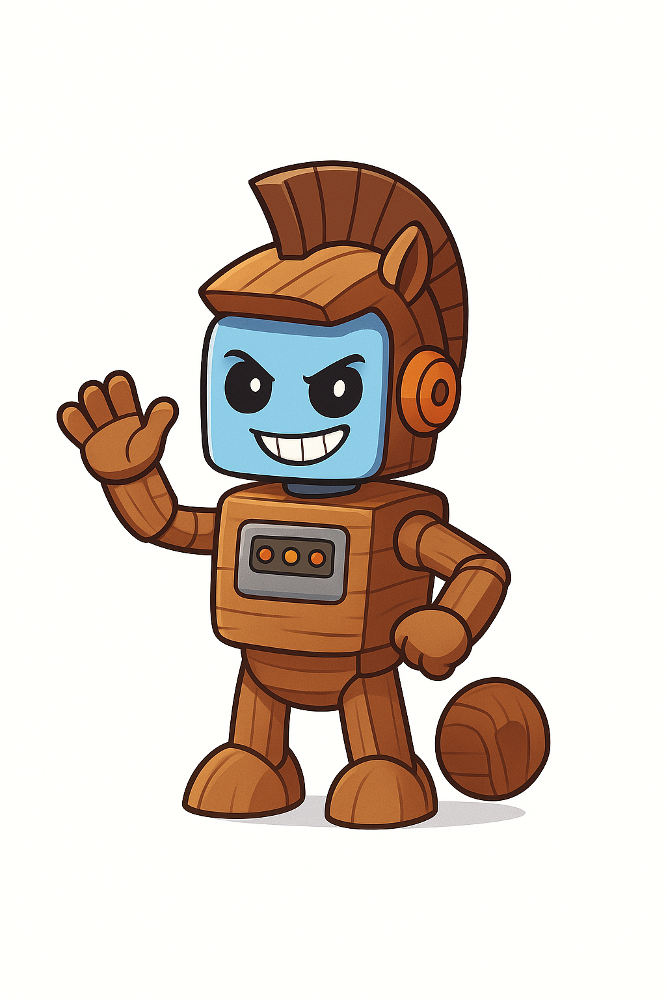
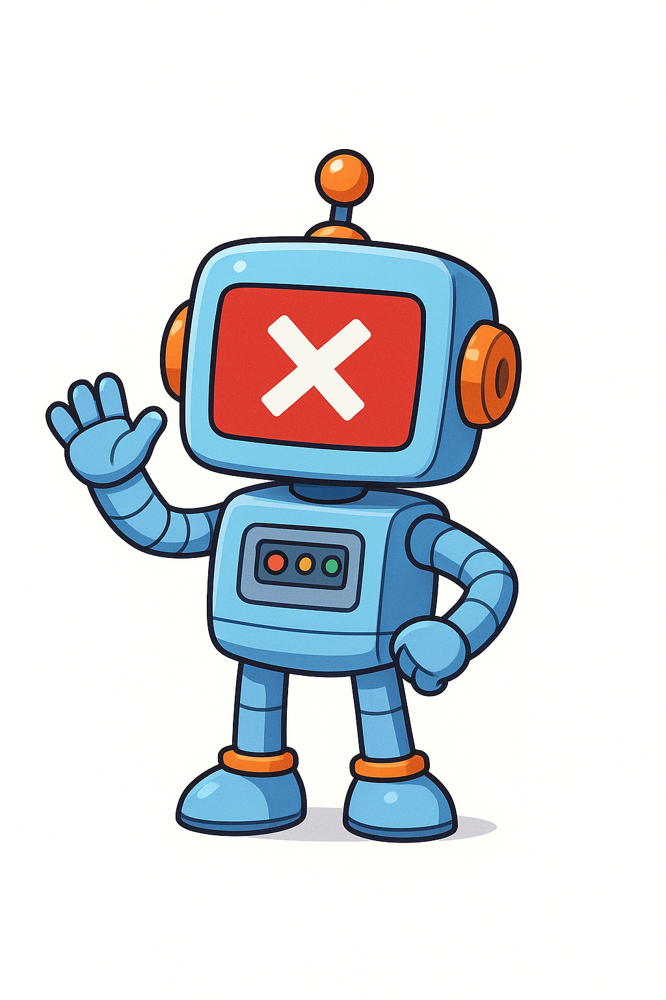
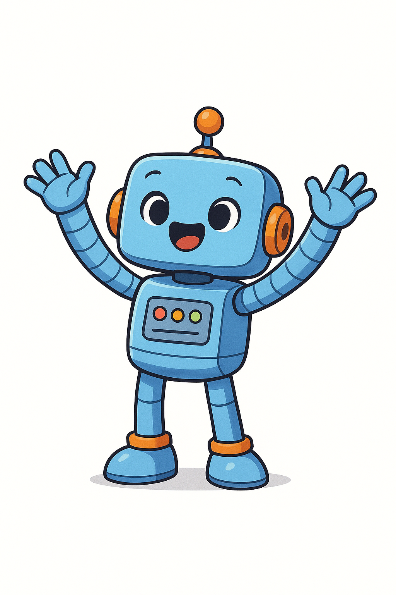
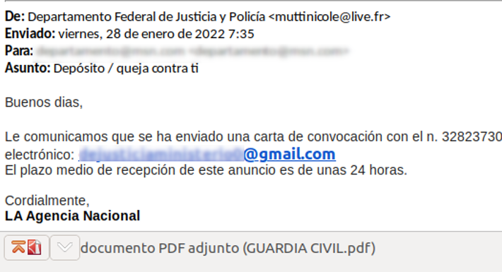
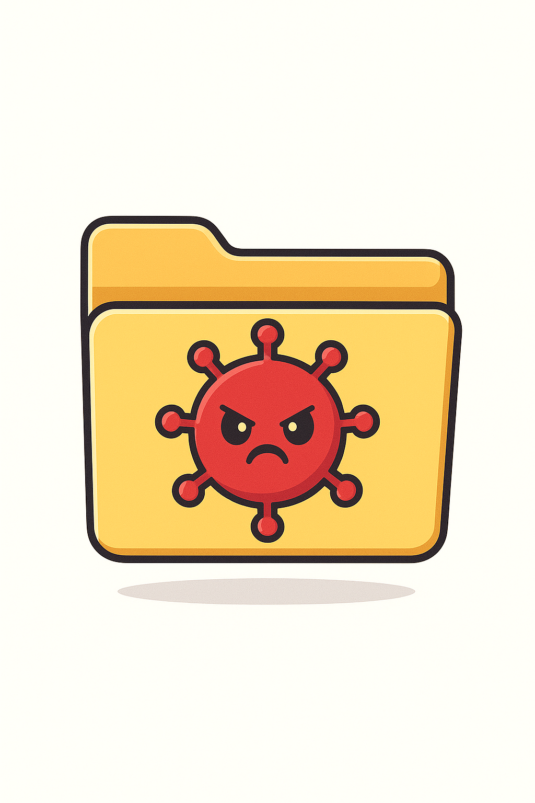
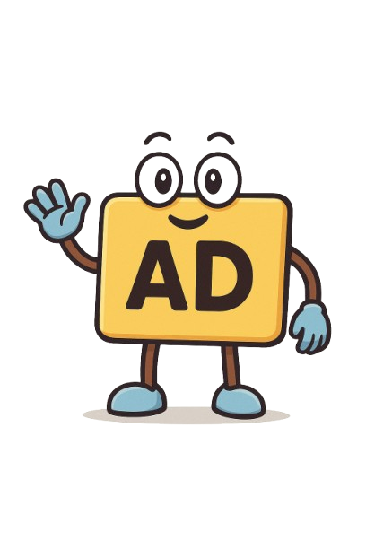
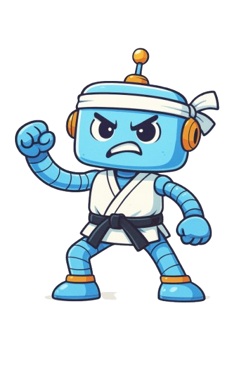

Hoy en dia con el surgimiento de las nuevas tecnologías, han surgidos con ellas nuevos peligros a los que nos tendremos que enfrentar en el día a día. Pero no te preocupes, en esta web aprenderás cómo detectarlas y combatirlas. Desde malware hasta robos de identidad, aquí tienes todo lo que necesitas saber para ser un ciberpro.
Una ciberamenaza es un acto malicioso que busca dañar datos, robar información o afectar la vida digital de las personas. Estas amenazas pueden incluir virus, brechas de datos, ataques DDoS, y otras formas de ciberataques. En general, se refiere a cualquier actividad en el ciberespacio que tiene fines maliciosos, como el acceso no autorizado o la destrucción de sistemas de información. Aquellos que realizan estas acciones se llaman hackers, y hacen uso de programas informáticos malignos conocidos como malware.
Un malware es todo aquel programa o código malicioso que es dañino para los sistemas. El malware busca invadir, dañar o deshabilitar computadoras, sistemas informáticos, redes, tabletas y dispositivos móviles, a menudo controlando parcialmente las operaciones de un dispositivo.
El spyware es malware que observa en secreto las actividades del usuario de la computadora sin su permiso y lo informa al autor del software. Puede guardar lo que escribes en el teclado y el registro de toda tu actividd en el ordenador.
Los gusanos son malware muy peligroso. Estos se replican en tu ordenador acabando en todos los archivos. Son incluso capaces de infectar otros dispositivos en una red local. Si sospechas que tu dispositivo está infectado con un gusano, desconéctalo de la red inmediatamente.
Un Troyano es uno de los tipos de malware más peligrosos. Generalmente se presenta como algo útil para engañarte. Una vez en tu sistema, los atacantes detrás del Troyano obtienen acceso no autorizado al ordenador afectado. Desde allí, los troyanos pueden ser utilizados para robar información financiera o instalar otros tipos de malware, a menudo ransomware.
El ransomware es una forma de malware que bloquea el acceso a su dispositivo y/o cifra sus archivos, y le obliga a pagar un rescate para recuperar el acceso. El ransomware se considera el arma preferida de los ciberdelincuentes porque exige un pago rápido y rentable en criptomoneda difícil de rastrear.
En este apartado aprenderás como evitar los errores más comunes que puedes cometer a la hora de utilizar el internet. ¡Ánimo, ya falta poco para convertirte en un ciberpro!
Ten cuidado a la hora de pulsar en enlaces de emails. Los hackers suelen hacerse pasar por empresas famosas con la esperanza de que tengas contratado sus servicios. Presta atención a los detalles: faltas de ortografía, sensación de urgencia, etc. Lo más importante de todo: las compañías JAMÁS pondrán un enlace en sus emails.
Ten cuidado a la hora de descargar archivos de fuentes poco fiables. Muy probablemente esté infectado con un troyano que una vez sea instalado en tu ordenador será demasiado tarde para pararlo. Jamás descargues archivos de fuentes no confiables, sobre todo si el mismo navegador te avisa cuando intentas descargar algo.
Otro peligro que tienen los sitios piratas es el spam, una cantidad masiva de anuncios fraudulentos y maliciosos. Estos son más peligrosos aun ya que solo hace falta un click para infectar tu dispositivo. Si te encuentras con uno de estos sal de la web inmediatamente.
Para más consejos visita esta página
¡Wow, has llegado hasta aquí! Prepárate para la prueba final, usa todo lo que has aprendido para superarla y por fin ser un ciberpro. Pulsa aquí para iniciar la prueba
